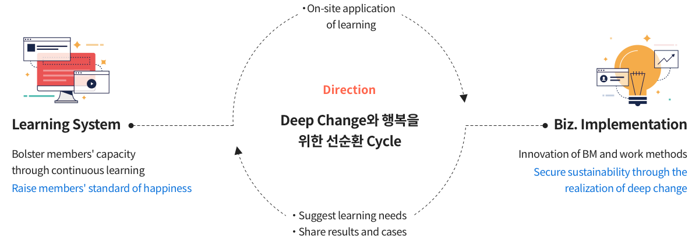

Learning path that a learner
designs in line with individual
interest/level
mySUNI is a new learning platform that bolsters individual members'
capacity for growth in pursuit of happiness.
capacity for growth in pursuit of happiness.
In addition, mySUNI creates a virtuous cycle of deep change and happiness
as a starting point for establishing a learning organization.
as a starting point for establishing a learning organization.
Mission
Integrated infrastructure at the group level to accumulate and secure human capital
Space for early acquisition/cultivation of necessary capacity for deep change
Learning area to transform members' capacity
Foundation for continuous/long-term happiness creation through
simultaneous growth of the company and individuals
Learning area to transform members' capacity
Foundation for continuous/long-term happiness creation through
simultaneous growth of the company and individuals

Solution
mySUNI learning allows members to choose and design their own
learning paths.
learning paths.
Members can learn with high-quality educational content that reflects recent environmental
changes, such as AI/DT, anytime, anywhere. Furthermore, mySUNI supports the infinite
potential of members so that they can pursue a self-directed career after learning.
changes, such as AI/DT, anytime, anywhere. Furthermore, mySUNI supports the infinite
potential of members so that they can pursue a self-directed career after learning.
-

Self-directed Learning
-

Adaptive Learning
Personalized content curation
based on machine learning -

Social Learning
Community that connects experts
by job and learning content